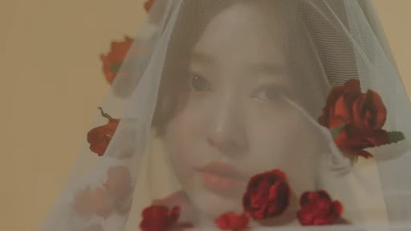

IZ*one의 이름으로 선보이는 데뷔 미니앨범 [COLOL*IZ]는 영단어로 ‘색칠을 입히다’라는 뜻을 가진 “Colorize’와 동일한 발음을 활용한 제목이다. 이 앨범의 타이틀곡 라비앙로즈(La Vie en Rose)는 처음 공개되는 아이즈원의 매력을 느낄 수 있는 곡으로 강렬한 후렴구가 인상적이다. 대표하는 꽃은 붉은 장미로 제목에도 장미빛 인생이라는 뜻을 담았고, 춤에도 장미가 피어오르는 것을 연상하게 하는 동작들이 자주 나온다. 뮤직비디오에서는 직관적으로 장미를 활용하는 장면도 손쉽게 볼 수 있다. 붉은 장미의 꽃말이 열정이 듯 데뷔를 향한 멤버들의 소중한 꿈과 넘치는 열정을 보여주는 앨범이다.
1-1 라비앙로즈(La Vie en Rose) 무대
라비앙로즈 무대를 보면 장미를 최대한 활용하고 대체로 붉은 계열이 그래픽을 활용하여 정렬적이고 열정적인 컨셉을 그대로 보여준다. 여러가지 꽃이 피어나는 모습부터, 꽃밭에 나비가 날아다니는 모습, 온 몸에 꽃잎이 흩날리는 모습을 여러 안무들로 보여준다.
1-2 라비앙로즈(La Vie en Rose) 뮤직비디오

뮤직비디오는 더욱 직관적으로 장미를 소품으로 사용한다. 그 외에도 붉은 계열의 소품들과, 의상의 색깔을 통해 아이즈원이 이번 앨범에 보여주고자 하는 것을 보다 효과적으로 나타낸다.
2. 미니 2집 [HEART*IZ]
성공적인 데뷔를 마친 IZ*one의 2번째 미니앨범 [HEART*IZ]는 영단어 ‘Heart’와 IZ*one의 합성어로, 아이즈원이 표현하고자 하는 진심의 이야기를 담은 앨범이라는 뜻을 가지고 있다. 이 앨범의 타이틀곡 비올레타(Violeta)는 대중들과 팬들에게 받은 에너지와 많은 사랑에 보답하기 위한 답가이자, 아이즈원이 들려주는 응원가 같은 느낌을 선사 할 것이다. 대표하는 꽃은 제비꽃으로 타이틀곡 비올레타(Violeta)에서 직관적으로 제목에 나타내기도 하며, 동화 ‘행복한 왕자’의 스토리 일부분을 착안해 탄생했다. 멤버들이 사랑하고 응원하는 대상을 제비꽃으로 비유하고, 행복을 상징하는 사피어어를 제비꽃에게 전달하는 제비를 아이즈원으로 비유해 동화를 재 해석했다. 뮤직비디오 또한 동화를 모티브로 이야기를 풀어나갔다. 안무에는 제비가 보석을 찾아 날아가는 모습을 상징한 동작이 있다. 이번 활동은 모두가 소중한 본인의 존재를 깨달았으면 좋겠다는 메세지를 담고 있다.
2-1 비올레타(Violeta) 무대
무대는 제비꽃의 옅은 파스텔 보라색을 중심으로 컬러를 결정하고, 의상 또한 무대와 같이 파스텔 톤으로 입었다. 바람에 제비꽃이 흔들리는 듯한 안무와 제비가 날아다니는 안무를 통해 이번 앨범의 컨셉을 쉽게 이해 할 수 있다.
2-1 비올레타(Violeta) 뮤직비디오
‘행복한 왕자’라는 동화를 은유적으로 설명하면서 스토리가 진행이 된다. 이해에 도움이 되도록 중간에 보석을 들고 있는 멤버부터, 꽃밭에 있고 제비꽃을 들고 있는 멤버들이 등장을 한다. 뮤직비디오 또한 대체로 파스텔톤으로 만들어졌고, 여러가지 부가적인 소품들과 장면들로 이번 앨범의 컨셉을 은유적으로 보여준다.
3. 첫번째 정규 앨범 [BLOOM*IZ]
아이즈원이 더욱 새롭게 선사할 첫 번째 정규 앨범 [BLOOM*IZ]는 ‘꽃을 피우다’의 의미를 가진 ‘Bloom’과 IZ*one의 합성어로, 절정의 아름다움을 담아 마침내 만개를 앞두고 있는 열 두 소녀의 모습을 다양하게 담아냈다. 이 앨범의 타이틀곡인 피에스타(Fiesta)는 이름이 가진 의미처럼 아이즈원이 모여 절정과 만개를 피어낸 모습을 축제라는 이미지를 형상화해 더욱 과감하고 화려하게 표현했다. 노래 가사에 ‘태양을 꼭 삼킨 채 영원토록 뜨겁게 지지 않을게’ 라는 문구는 이 앨범을 대표하는 꽃 꽃도라지의 꽃말 변치 않는 사랑에서 착안했다. 티져영상에 꽃이 만개하는 듯한 장면과 안무에 만개한 꽃이 흩날리는 듯한 동작들은 이 앨범이 담고자하는 의미를 잘 표현하고 있다. 이 앨범을 마지막으로 ‘IZ*one 꽃 3부작’은 막을 내렸지만, 만개한 모습으로 새롭게 찾아가겠다는 멤버들의 굳은 의지가 보이는 앨범이다.
3-1 피에스타(Fiesta) 무대
꽃 3부작의 마지막을 장식하는 앨범답게 이제 시리즈의 컨셉을 활용하여 무대를 꾸미기도 하고, 이번 앨범의 큰 주제 ‘만개’를 축제로 비유하여 무대를 꾸몄다. 만개에 걸맞게 이전보다 안무가 역동적이고, 무대 연출도 화려하게 되어있다. 안무에서는 꽃이 피어나는 과정부터 꽃잎이 떨어져 흩날리는 모습을 은유적으로 표현하여 컨셉이해에 도움을 준다.
3-2 피에스타(Fiesta) 뮤직비디오
이번 컨셉인 축제와 만개를 적절히 꽃이 피어나는 동작과 꽃이 흩날리는 안무, 그리고 축제를 연상케 하는 역동적인 안무를 통해 효과적으로 보여주고 있다. 뮤직비디오 색감 또한 이전보다 훨씬 화려하고 여러가지 색깔을 활용하였다. 의상은 이전에 통일성을 가지게 입었던 것과 다르게 각자의 매력이 잘 표현되도록 입었다.
4. IZ*one 꽃 3부작의 끝
3번의 활동을 통해 개화부터 만개까지 모든 컨셉을 마친 아이즈원. 단순하게 꽃을 표현한다기 보다는 각 앨범속에 여러 내용을 담고, 활동마다 의미를 부여하여 진부하지 않고, 참신하게 대중들에게 다가갈 수 있었던 것 같다. 이번 시리즈를 통해 여러 기록과, 업적을 이루었고, 대중들에게 확실히 각인될 수 있는 기회가 되었다. 이 3개의 앨범을 프로듀싱한 한성수대표의 공식입장을 통해 완전히 3부작의 막이 내렸고, 그가 말했듯이 팬들은 좋은 추억이 되었고, 축제와도 같은 시간이 되었다. 항상 더 넓은 세상으로 향하고 더 높이 성장할 아이즈원의 행보를 응원한다.